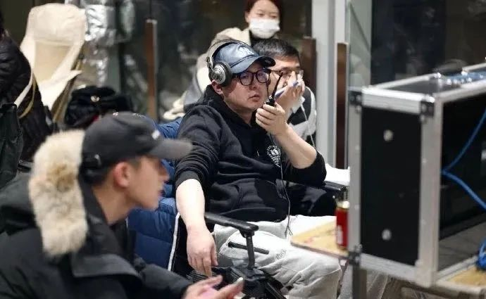
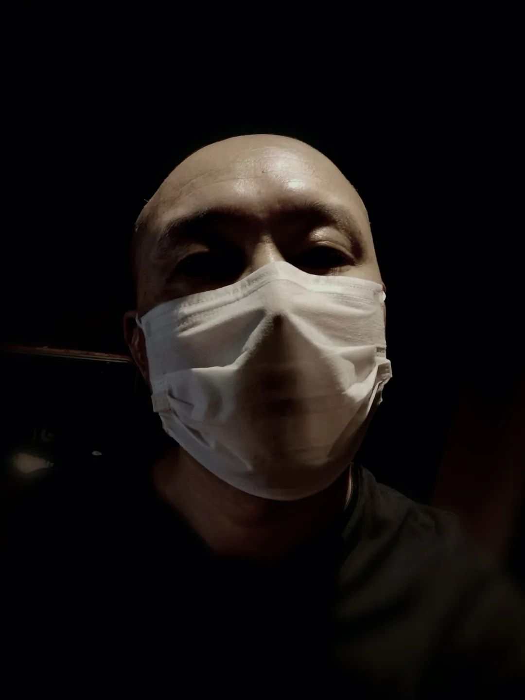

不安、惶恐与感动，一个武汉人滞留在云南的24天
原文链接 备份链接 “ - 疫 情 之 下 - 这二十多天，我有足够的时间陪伴家人，正是有无数人在前方流泪、流汗、流血地付出，才有我们平静安心的生活，我会珍惜每一天。 ” 1 闹铃响了，又是新的一天，拉开窗帘，红彤彤的鸡蛋大小的太阳在滇池 …

滞留的剧组成员（左二为邵进）。图片由受访者提供
_“有一天，快到中午的时候，我在电梯里碰到刚下班的护士们。那是几个90后女孩，正在讨论是先洗澡还是先吃泡面。一个女孩说，肯定要先洗澡，因为要除菌嘛。另一个女孩说，可是真的太饿了，想先吃泡面。又有人说，要是有米饭吃多好。听到护士们的对话，我很想让她们吃上米饭。”_——邵进
作者|施展展
武汉封城当天上午，正在当地拍摄电视剧《青春创业手册》的导演邵进接到朋友电话，商量剧组是否撤离。邵进考虑了一会儿，决定留下来。在完成当天的计划后，拍摄暂停，130多人在酒店自我隔离。
1月17日，剧组曾去武汉同济医院光谷院区拍摄。这让邵进事后一度提心吊胆，直到14天隔离期满，剧组无一人抱恙，他才稍微放下心来。
2月1日，中国广播电视社会组织联合会电视制片委员会、演员委员会联合发布了影视剧停止拍摄通知，利用春节赶工的各地剧组纷纷停了下来，《有翡》《大江大河2》等多个剧原地待命休整。此前，浙江横店影视城关闭了辖区内的拍摄场景，20多个拍摄中的剧组停工待命。但拍摄停止了，导演和制片人要操心的事并没有减少，剧组成员吃、住、薪资仍然是固定花销，上百人的健康和安全更要挂在心上。
在疫情中心武汉，包括《青春创业手册》在内的多个剧组一边隔离，一边摸索妥当的方式，应对这种史无前例的状况。
邵进所在的酒店确诊了两例新型肺炎患者，其中一例在发病48小时后离世。邵进开始慢慢学会和眼下的困境相处，每天用视频记录疫区生活，收集各种与疫情有关的故事，结合自己的感受将它们记下来，酝酿着创作一个新的剧本。
与此同时，他成为一名志愿者，加入到疫区救助的行动中。行动一定程度上缓解了他的焦虑情绪。目前，他最大的心愿是，剧组可以早日安全撤离武汉。
以下是邵进导演的口述：
1
我们是去年11月26日在武汉开机的，原本打算2月10日杀青，现在不可能了。
1月23日上午10点，武汉市开始封城。上午8点多，我接到电话，说武汉可能要封城了，问我要不要撤离。我当时想，我们临时撤了，将来整个行业会怎么看我们这些人？别人会觉得我们是逃兵。
我们剧组有130多人、几十辆车，如果临时要撤，还需要时间准备。我有专车，可以走，但剩下那一百多人怎么办？他们都是我的同事、朋友。说句自私的话，如果我走了，将来还想继续拍这部戏，谁会愿意再跟我？
我们决定，1月23日剧组正常开工。那天大家都很紧张，好在拍摄地在武汉光谷金融中心，我们那一层楼全是样板房，没有其他人，整个剧组只有美术和外联部门会跟外界联系。
到了拍摄现场，我提议大家一起录制一个抗击疫情的VCR（短片）。下午我们就把它赶制出来，在网上公布了。当天晚上8点多收工，第二天就是大年三十，剧组开始放假。
那天发生了两件比较吓人的事。剧组里负责外联的工作人员是武汉本地人，他父母生病相继进了医院，他不得不回家照顾。此外，美术指导也身体不适——幸亏后来很快排除了风险。我们通知负责外联的工作人员暂时不要回酒店，在家里待着。后来我给他打电话，他说他父母没事了，我才稍微放心。
收工那天晚上，我去酒店附近的小卖部买了些泡面。
小卖部的老板说，你可以买点鸡蛋、挂面，煮着吃。我告诉她，我没有锅，只有一个煮茶用的电磁炉，只能烧水泡泡面。她当时正在吃晚饭，一个铝盆里装着凉拌黄瓜，听我这么一说，她立刻拿个碗，把黄瓜倒在碗里，把铝盆洗干净了给我，说：“哎呀，我这锅都卖完了，这个给你，你回去用电磁炉做饭。”
那口“锅”我一直用到2月11日，那天我在网上买的锅到了。取锅时，快递小哥跟我说注意安全。我们天天在酒店待着，他天天到处跑，他还那样关心我，我觉得特别温暖。
现在到处物资匮乏，我们所在的又是武汉比较偏僻的区域，住在酒店就能明显地察觉到变化。刚开始，酒店每天会为房客提供免费矿泉水，每天会来打扫卫生、换被单。渐渐地，前台跟我们说，配套洗被单的公司已经不提供服务了，被单变成一礼拜一换。后来一礼拜也不换了，矿泉水也不送了，垃圾必须自己倒。
最开始，剧组自己做饭吃，由住酒店式公寓的工作人员把饭做好，给大家送过来。到大年初六，我们就不让他们做饭了。因为他们每天出去买菜，要接触外面的人，很危险。剧组是命运共同体，有一个人出事都不行。
不做饭以后，剧组就给大家发方便面，隔段时间集中采购蔬菜，发给各个部门。生活肯定比较艰苦，但是没办法。元宵节那天，制片人煮了些汤圆，用饭盒装好发给大家，我也去拿了一碗，多难得的汤圆啊。

剧组此前在武汉拍戏。
2
这次疫情真正让我后怕的是，1月17日，我们曾去同济医院的光谷院区拍摄。去医院拍摄当然要提前报备，申请程序走了两天，第三天就去拍了，非常顺利，所以当时我们根本没想到疫情这么严重。
那天剧组一共去了70人，从早上7点一直拍到下午3点。回想起来，我当时做了一个正确的决定：我让现场制片去买口罩，我们先拍外景，等到口罩来了，确保每人都戴上，再进去拍摄。
医院将三楼的一块区域划出来让我们拍，他们也不希望剧组拍摄影响病人。但其实我们拍摄区域的隔壁就是发热门诊。
那天去医院食堂吃午饭时，现场有很多空桌子。不知为何，一位戴口罩的患者非要坐我旁边吃饭。我当时吃得差不多了，赶紧走了。现在想想是很危险的。
从大年三十开始，我们全组130多人都在酒店隔离。剧组分两个酒店住，我和演员们共20多人住在一家酒店，另外一百多名工作人员住在另一家酒店式公寓。所有人必须在酒店待着，没事不准外出，外出必须跟剧组请假。
后来我发现，一不上班，大家都很无聊，开始互相串门，聚在一块儿吃饭喝酒。所以从大年初三开始，我们实行了房间隔离制度，规定大家不准串门。
从1月17日去医院拍摄算起，一直到正月初六，第一个14天观察期结束，剧组没人出事，我悬着的心才稍微落下来。
这期间，我也提心吊胆过。有一天晚上，我在房间做完运动泡了个热水澡，从浴室出来，气喘不上来，坐在沙发上直冒虚汗，赶紧给一位医生朋友打电话。他告诉我，你到窗口呼吸呼吸新鲜空气。我照做，很快好了，原来只是缺氧，但当时真的吓到我了。
我们所在的酒店也发现了两例确诊病例。一例是前台小姑娘，听说她是回家看望男朋友时被感染的。还有一位是住在16楼的客人，已经去世了，从发病到去世，仅仅48小时。事发后16楼被封起来了，那位客人乘过的电梯也封起来了。在目前的情况下，酒店也只能做到这样了。
酒店将情况如实告诉了制片人，制片人再告诉我和几位男演员。我们没敢把这些事情在剧组群里说，有些女孩子本来就害怕，我们担心她们知道了以后会更害怕。
我们也没办法从这家酒店转移走。如果一家酒店出现一个病例就要转移，那我觉得整个武汉都已经没有地方可以住了。
我当时能感觉到酒店还住着一些疑似病例。有一次我下楼拿快递，一位拿着医院CT袋的人跟我进了同一部电梯。我戴着口罩，但内心还是有一丝紧张。大家只能尽量减少出门次数，增强自我保护意识，戴上手套，口罩用双层的。
3
我对重新开工的时间判断经历过很多次变化。最开始，武汉封城，但中国广播电视社会组织联合会还没有出台剧组暂停拍摄的通知时，我一直跟制片人商量，能不能抢一抢，从初二开始拍，拍到初五左右。我这部戏的主场景还有4天戏份，拍完这4天，就可以开始剪辑了。我担心的是，我们租的写字楼说卖就卖，说租就租，在这个场景里有大量的戏，改景是不现实的。将来这个景没了怎么办？
到了初三，我意识到这件事情是不可能的了。制片人也说，现在国内大部分剧组都停工了，如果我们坚持要拍，将来对整个戏、对我们在行业中的影响都不好。将来别人会说，这是一个不顾演员生死的剧组。我们决定还是先等一等。
后来我看新闻，专家预测元宵节前后是个拐点，我又想，正月十五能开拍就好了。那是我最焦虑的阶段。我特别担心这部戏，从允许拍摄的时间算起，至少得半个月才能重新开机。大家在这个地方困了这么久，肯定都想回家，马上连着拍是不现实的。
2月初我跟制片主任沟通时，我的态度变成了，2月底能让我们离开武汉就已经很好了。现在，我只希望大家可以安全地离开武汉，至于什么时候离开，我已经不强求了，更不指望开工。
2月24日中午，武汉市突然公告称滞留武汉的外地人员可以出城。微信群里马上沸腾了，大家都很开心，开始疯狂刷屏。制片主任马上做了一张表格，登记所有人的身份信息。还没统计完呢，第二条公告就出来了，说放开离汉通道的通告无效。群里一下就安静了。
朋友一直跟我讲，只要人没事，都没关系。只要还在武汉一天，大家的基本生活问题就能解决。但你知道，一百多人的吃、住，每天的消费是上万的，时间一长会是很大一笔帐。而且，薪资怎么办，这件事情完全没有先例可参考。
虽然每个剧组的合同上都会规定，假如碰到不可抗因素该如何处理，但当它真的发生，我们也不可能坐视不理。据我了解，武汉现在滞留了3个比较大的剧组，另一个剧组的制片主任也经常问我们，什么时候放假，怎么结算，他们就照学。
我们最终决定，给剧组工作人员适当补偿。演员则按照各自不同的合同来执行。这期间，我们剧组没有任何人因为钱的事情表达过不满。我们租器材的公司老板也特别好，他说疫情期间就不算租金了。如果将来戏继续拍，也会按合同价执行，一分钱都不会多加。
4
2月10日左右，江苏无锡支援湖北医疗队入住我们酒店。12日上午，酒店经理发了个视频给我，视频中，医疗队的医护人员正在排队剃头。有人剃了短发，还有人直接剃了光头。
我深受触动，想从形式上支援医疗队。于是，那天上午10点多，我拿起剃须刀片，给自己剃了个光头。
我长这么大从来没有剃过光头，其实我心里很害怕。我先是试着把两边的鬓角剃掉，鬓发没了，太难看了，不剃不行。中途，我还把头顶的一颗小疙瘩划破了，流了血，处理了好一会儿。一直到中午12点，我才剃完。

邵进自己剃了光头。
我偶尔会碰到医疗队的医护人员。前两天我出门倒垃圾，发现房间门口多了一大袋零食。我以为剧组的人放的，问了一圈都不是。后来隔壁的护士敲门跟我说：“给你门口放了点吃的。”
还有一天，快到中午的时候，我在电梯里碰到刚下班的护士们。那是几个90后女孩，正在讨论是先洗澡还是先吃泡面。一个女孩说，肯定要先洗澡，因为要除菌嘛。另一个女孩说，可是真的太饿了，想先吃泡面。又有人说，要是有米饭吃多好。
听到护士们的对话，我很想让她们吃上米饭。
我之前给我们剧组买过200盒自热米饭，就找到了那个厂家的老板，跟他说明了情况，问他能不能捐赠一些。我当时只是试探性地问一问，就跟我们拍电影找投资人一样，没有预想结果。没想到他非常爽快地去跟董事会的人商量，3天后告诉我，他们愿意捐出1万份自热米饭。
后来我又联系了上海的一位朋友。他人脉广，也有捐款操作经验。我们一拍即合，共同发起向一线医务工作者募捐1万份自热米饭的倡议。
我们迅速建群，向募捐者展示募捐情况，接受他们的监督。第一位加进来的捐赠者免费为这次募捐设计了海报，我负责写文案，后来还成立了宣传小组。我成了这支志愿团队的核心成员。
2月17日下午5点我们发起募捐，到18日下午4点，已经超额完成原定1万份的募捐计划。自热米饭生产厂家以低于出厂价的价格将1.1万份自热米饭卖给我们，并主动承担了运输费用。
2月25日上午十点，2.1万份自热米饭到了。
这些自热米饭有1万份送给了在武汉光谷地区的近28家医疗队。另外1.1万份，我们捐给一线医院，当中包括李文亮医生生前所在的武汉市中心医院。
为了确保物尽其用，我们梳理了一套比较规范的流程：来领物资的必须出示单位的接收函。物资到地和分发后，要拍视频和照片给我们。我们要看到，这些东西确实发给医护人员了。
我们的货车在运送途中，遇到了一位爬到大桥栏杆上想自杀的女孩。志愿者将她拉了下来，马上打电话给志愿者团队中的心理咨询师，咨询如何劝导她。女孩后来解开了心结。现在，她也想加入我们的志愿团队。
5
朋友问我，如果被感染了，你的人生有什么遗憾？我想了想，我唯一的遗憾是，还没有足够的时间孝敬父母。其他的好像也没什么，没有成名、没有赚到很多钱，我觉得这些都不重要。
刚开始，我父母每天给我打一个电话，现在一天打两个。他们担心我没得吃，怕我在房间里待不住。每天都要叮嘱我千万不能出去。
那天我和一位演员聊天。我跟对方说，我们最差就是损失了这部戏。但你看，在这次疫情中，很多人失去了家人甚至生命，从这个角度看，活着就是赚到了。比起他们，你不觉得很幸运吗，你还在乎一部戏吗？
在参与志愿活动前，我每天早上睡到自然醒，起床后看一会儿新闻，做点吃的——煮包泡面或者吃两个苹果。下午休息一会儿，两点钟左右开始处理剧本。到5点左右，我就开始做晚饭，做饭的同时拍一条小视频。
刚开始只是想记录一下我在武汉封城后的生活，后来有一天没拍，就有一些同学不放心，打电话问我，你怎么样了？
这是他们了解我安危的途径。我就想，好吧，那我就每天拍，一般就是拍拍吃了什么，怎样打发时间。也有陌生网友留言，打气的居多，他们会说“加油啊”“很快会挺过去”之类的。
到了晚上就看看电影。我看了很多跟病毒、疫情有关的电影，《流感》《危楼愚夫》《传染病》《印度病毒》都看了。
我手头有两个剧本在做，另外也在写一个跟新冠肺炎有关的剧本。那段时间我没事做，不想坐以待毙。但我不能像演员们一样做直播，没有“颜值”我干不了那个。现在武汉不能开车，我也不能上大街上采访。于是我想，我在这里能感受到这么多好的故事、素材，应该把它们做成一个好的剧本。
虽然我获取信息的渠道都是在网上看一些报道和帖子，但身在疫区，对这些素材的感受是不一样的。何况现在，我自己加入其中，有更多机会收集素材。
我收集了很多好故事。比如，我加入上海的一个医生群，群里他们说，上海有位医生，没有被选进第一批前往武汉支援的医疗队，他特别想来，但武汉又封城了，于是他一个人坐飞机到长沙，从长沙打车到湖南湖北交界处，再打车来武汉。
我还在一个视频中看到，有一个女人把自己和老公、孩子隔离开，独自住在另一个房子里，每天去给社区的疑似病例送菜。我2月初下楼，还看到每个小区都有志愿者车队，专门负责将小区里的病人送到医院去。
我想找一个合适的方式，将这些故事串在一起。
其实综观人类历史，每个惨剧为什么最后能过去，都是因为个体的伟大。是无数个体，帮助一个群体度过了灾难。像英国的鼠疫，那个亚姆村的人本可以北逃的，但他们一旦逃跑，就会将鼠疫带到英国北部。于是，整个村庄的人都将自己隔离了。等他们出来时，时间已经过去一年，很多人已经去世。正是他们的自我牺牲，才将英国的鼠疫彻底扼杀。这就是大灾难面前人的伟大。
我们这次疫情，正是医疗工作者、专家、大大小小的志愿者，还有无数病患，他们在付出啊。你反过来想，对医生来说，那无非是一份工作，他可以不去的。说句不好听的，现在送外卖都能一个月赚一万多块钱，但为什么还有那么多人自愿去前线呢？他们不傻吗？他们也有风险啊。但正是因为有很多很多这样的“傻瓜”，我们最后才能战胜疫情。
所以作为影视工作者，我想把这些记录下来，可能它不是什么大片，也不会拿什么奖，不会有多高的票房，但我想记录下来，再过十几二十年，把它拿出来给孩子们看，告诉他们，我们曾亲身经历过这样一段历史。
*本文由冰点周刊、腾讯新闻贵圈联合出品，仅在中青报和腾讯新闻平台发布，未经授权不得转载。
中国青年报·中青在线出品

觉得好看请点这里
原文链接 备份链接 “ - 疫 情 之 下 - 这二十多天，我有足够的时间陪伴家人，正是有无数人在前方流泪、流汗、流血地付出，才有我们平静安心的生活，我会珍惜每一天。 ” 1 闹铃响了，又是新的一天，拉开窗帘，红彤彤的鸡蛋大小的太阳在滇池 …
原文链接 备份链接 疫情蔓延时，在无数依然相爱或曾经相爱的人眼里，只要能够平安，就是最好的庆祝 文 |《财经》特派武汉记者 刘以秦 编辑 | 余乐 2月14日，这是很多人眼里一个相爱的人相聚的日子。截止2月14日上午11点，武汉新冠肺炎 …
原文链接 备份链接 王一博所在的《有翡》剧组此前宣布停工（图源：电视剧《有翡》官方微博） “ 虽然剧组复工踊跃，但短期来看，距离真正的复工还需要时间。 ” 2月10日，横店影视集聚区管理办公室下发关于确保新冠肺炎疫情防控期间影视企业（剧 …
原文链接 备份链接 办理值机的柜台，工作人员看到湖北签发的护照，下意识地向后躲了躲，接着拿起电话，用英文说着什么。 口述 | 王丰 整理 | 吴雪 武汉市长周先旺1月26日晚在新闻发布会上说有500多万武汉人离开武汉，而我们一家三口就是 …
原文链接 备份链接 “ 母亲这些天常说，“我是真的很想家了，离开武汉你不会怨我吧。” —全民故事计划的第437个故事 — 一 母亲今年六十岁，来武汉时正值夏天，经过半年的适应，已基本习惯南方的生活。 城里的旧闻新知很多，最初的那段时间里， …